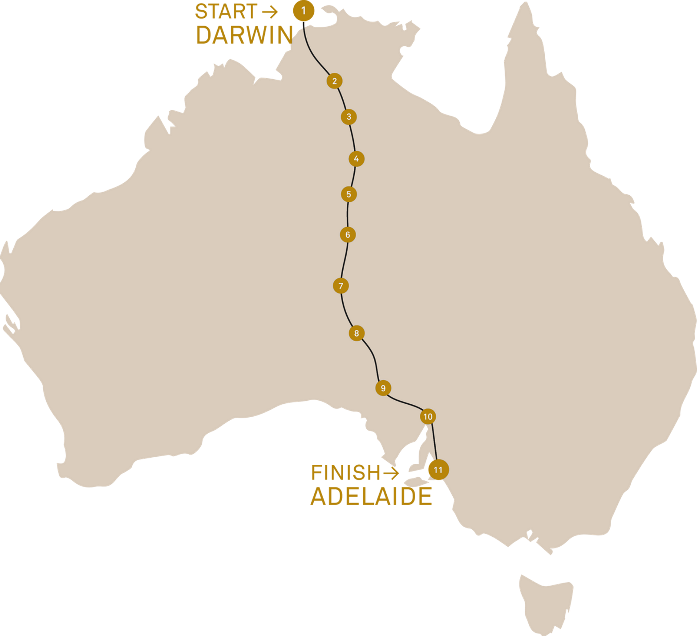
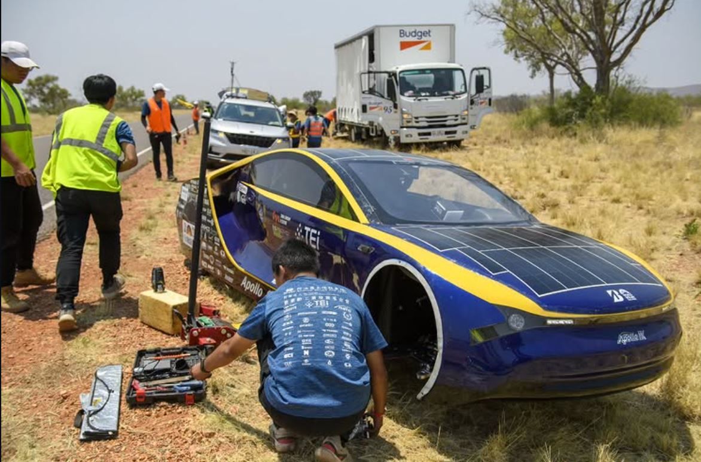

NKUST APOLLO
征服荒漠：3000 公里的終極考驗
全球共有 6 大太陽能車賽事，而「世界太陽能車挑戰賽」(World Solar Challenge, WSC) 是其中歷史最悠久、規模最大的頂級殿堂。這不僅是一場賽車，更是一場長達 3021 公里的生存挑戰。在澳洲的荒蕪內陸，選手需面對白天高達 40°C 的高溫、強勁的側風，以及夜間的野生動物。這是檢驗綠能技術與人類意志的極限舞台。

團隊參加 2025 年普利司通世界太陽能車挑戰賽 (BWSC 2025)，與來自世界各地的頂尖學子同場競技。這場由澳洲北部的達爾文 (Darwin) 出發，一路向南至阿德雷得 (Adelaide) 的史詩級長征，路程總長約 3,021 公里。
ROUTE: DARWIN ➜ ADELAIDE
競賽前，大會聘請專家與監理人員進行最嚴格的靜態與動態安全檢查。在這一週內，團隊在專業指導下不斷修正，確保車輛以最佳狀態迎接挑戰。

這不只是一台車的比賽。除了駕駛，其餘成員分乘於車隊中的支援車輛，扮演偵查、前導、後衛與後勤等關鍵角色。大家透過無線電緊密聯繫，即時回報路況與數據，共同克服海內外繁瑣的測試程序與路程中的突發狀況。

BWSC 2025 首次於澳洲冬末初春舉辦，這意味著我們必須面對強烈側風、傾盆大雨甚至冰雹的極端氣候。我們參加的 Cruiser 組不僅講求能耗，更引入「綠色主流」概念，對底盤與電力系統進行了全面優化。
最終榮獲世界第四，見證了台灣團隊的堅韌精神。